Qyteti Shkodrës
Informacion: Ky Website eshte nje projekt i krijuar si nje detyre, Ne kete Website do te gjeni
informacione per qytetin e Shkodres me gjith bukurite natyrore, traditat, kultura zakonet etj. Shpresojme tju pelqeje puna jone!
Shkodra, e njohur edhe si Shkodër, është një qytet në Shqipërinë veriperëndimore. është një nga qytetet më të vjetra dhe më historike
në vend, i njohur për trashëgiminë e pasur kulturore dhe mjedisin e bukur natyror. I ëmuar ndër kohëra të ndryshme si nyjë me rëndësi gjeostrategjike prej afërsisë mes malësive, liqenit, detit dhe rrugëve me rëndësi në kuadrin e Ballkanit Perëndimor.
Bashkia, e cila shtrihet prej Alpeve Shqiptare e deri në detin Adriatik, u krijua pas reformës territoriale më 2015 duke shkrirë njësitë e mëparshme të Anës Malit, Bërdicës, Dajëit, Gurit të Zi, Postribës, Pultit, Shalës, Shoshit dhe Velipojës.
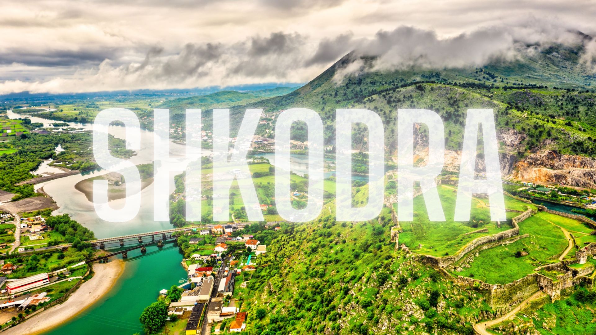
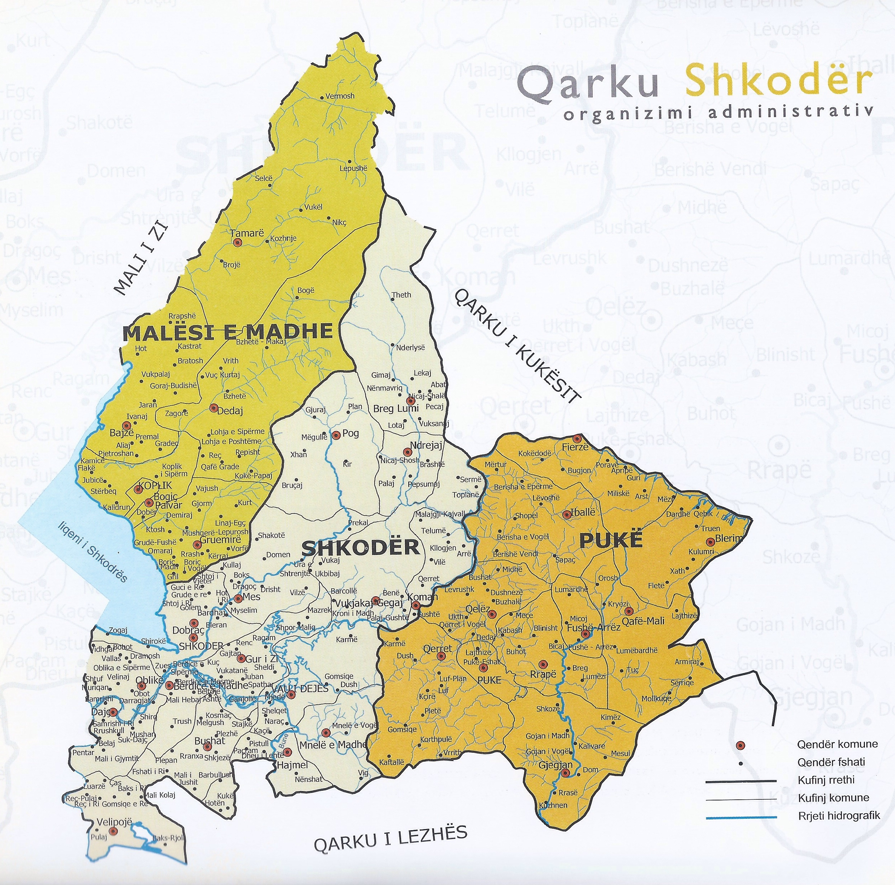
Historia
Lashtësia: Në mesin e shekullit të tretë p.k. përmendet si kryeqendra e mbretërisë së parë të Ardianëve. Mbretëresha Teuta dhe mbretërit Agron e Gent janë figurat më të përmendura të kësaj periudhe. Scodra ishte më e mirëmbrojtura (arx munitissima) dhe më e vështira për t'u pushtuar (difficilis aditu) nga të tëra fortifikatat e fisit labeat. Ishte një pozicion i fortifikuar në mënyrë natyrale (munitum situ naturali oppidum), i rrethuar nga mure me pirgje mbi portat (portarumque turres). Më 168 p.K. pretori romak Anicius ngadhënjeu mbi ilirët dhe pushtoi Shkodrën. Pas rënies nën sundimin romak, u bë ndër kryevendet jugore të provincës së Dalmacisë. Me reformat e Perandorit Dioklecian, Shkodra u bë qendra e Prevalit (lat. Prevaelis).Nga 395 AD, ishte pjesë e Dioqezës së Dakisë. 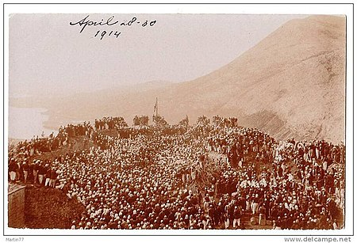
Mesjeta:
Pas gjysmës së parë të shekullit të 7 pjesa më jugore e pjesëve detare të Principatës Serbe, në Diokle, përfshinte edhe krahinën e Shkodrës. Qyteti qe pjesë e formacioneve shtetërore serbe, bullgare e zetase - pjesërisht edhe atyre bizantine - deri me rënien e Perandorisë Serbe në shek. XIV. Më pas u zotërua nga Balshajt, të cilët pasi u thyen në betejën e Savrës, Balsha II ia dorëzoi qytetin Shahinit (kephalia, capitaneus turcorum) deri kur prania osmane në këto vise u vënit dhe trysnia venedikase u shtua. Balshajt ia dorëzuan Venedikut më 1396. Përgjatë pranisë venedikase, por sipas gjasave edhe para ardhjes së Balshajve, zbatohej kodi ligjor i njohur si Statutet e Shkodrës. Më 1448 shkodranët mvartës të venedikasve luftojnë kundër Skënderbeut.
Më 1474 Bejlerbeu i Rumelisë, Sulejmani, rrethoi Shkodrën, por qyteti u mbrojt trimërisht nga Antonio Loredano dhe 2500 ushtarë, me ndihmën e anijeve venedikase në Bunë dhe në det, e me ndihmën e Cërnojeviqit zetas dhe malësorëve arbërorë. Rrethimi i dytë më 1478 u drejtua personalisht nga Mehmet Ngadhënjyesi, u dorëzua pas marrëveshjes së paqes në Stamboll më 1479.
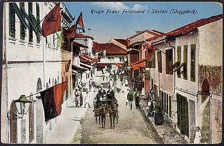
Vende Historike
Shkodra është shtëpia e shumë vendeve historike që tërheqin turistë nga e gjithë bota. Një nga më të spikaturat
pikë referimi është Kalaja e Rozafës, e vendosur në një kodër me pamje nga qyteti dhe ofron pamje mahnitëse të liqenit
Shkodra. Kalaja daton në epokën romake dhe ka dëshmuar qytetërime të ndryshme gjatë historisë. Toponimia e qytetit shtrihet në aq shtresa sa është e gjurmueshme historia e rishtë e tij, duke pasur shtresëzime që dëshmojnë periudhën latine, sllave, osmane, mbivendosjet e emërtimeve nga regjimi komunist apo edhe toponime të reja. Kodrat rreth të cilave shtrihej qyteti në kohën e Barletit quheshin Kazenë, Valdunus (kodra e kalasë) dhe Zarufe.
Kalaja e Shkodrës:
Kalaja e Shkodrës që mban emrin Rozafa është një monument mijëvjeëar i ngritur mbi një kodër shkëmbore në hyrje të qytetit të Shkodrës, në jug-lindje të tij. Qëndron mbi një kodër shkëmbore 130 metra mbi nivelin e detit, e rrethuar nga lumi Buna e Drin, me një sipërfaqe prej gati 9 hektarësh.
Kalaja përbën një simbol të qytetit, e pranishme ndër piktura, gdhëndje etj.
Në fushën poshtë Kalasë së mëvonshme të Rozafës. Qyteti u themelua nga ilirët në mesin e shekullit të 4 p.e.s. në kohën e Mbretërisë Ilire e sunduar nga dinastia e ardianëve (wd) kur ishte një nga vendbanimet e saj të rëndësishme. Pasi ra nën sundimin romak, mbijetoi si qytet ilir deri në shpopullimin e saj.
Zona përreth vendit ku ndodhet sot qyteti ka qenë e banuar që në kohët parahistorike. Këtu janë gjetur gjurmë të paleolitit të mesëm, ndërsa që nga neoliti gërmimet kanë zbuluar vazhdimësi jetese që vjen deri në ditët tona. Objektet e gjetura gjenden në muzeumin e qytetit, në atë të Tiranës dhe në muzetë e Evropës. Rrëzë kodrave të Tepes, në anën jugore të qytetit të sotëm, materialet arkeologjike fillojnë nga Bronxi i hershëm (3000-2000 p.k). Në shekullin V-IV p.K. filloi ndërtimi i kalasë me gurë ciklopikë të puthitur pa llaë. Në mesin e shekullit të tretë p.k. përmendet si kryeqendra e Mbretërisë ilire të dinastisë së ardianëve. Mbretëresha Teuta dhe mbretërit Agron e Genti janë figurat më të përmendura të kësaj periudhe.
Scodra ishte qyteti antik më i mirëmbrojtur (arx munitissima) dhe më i vështiri për t'u pushtuar (difficilis aditu) nga të tëra fortifikatat e fisit të labeatëvde. Ishte një pozicion i fortifikuar në mënyrë natyrale (munitum situ naturali oppidum), i rrethuar nga mure me pirgje mbi portat (portarumque turres). Më 168 p.K. pretori romak Anicius ngadhënjeu mbi ilirët dhe pushtoi Shkodrën. Pas rënies nën sundimin romak, u bë ndër kryevendet jugore të provincës së Dalmacisë. Me reformat e Perandorit Dioklecian, Shkodra u bë qendra e Prevalit (lat. Prevaelis). Nga 395 AD, ishte pjesë e Dioqezës së Dakisë dhe me t'u ndarë në dyshë Perandoria Romake, prej atëherë kaloi me Perandorinë Romake të Lindjes.
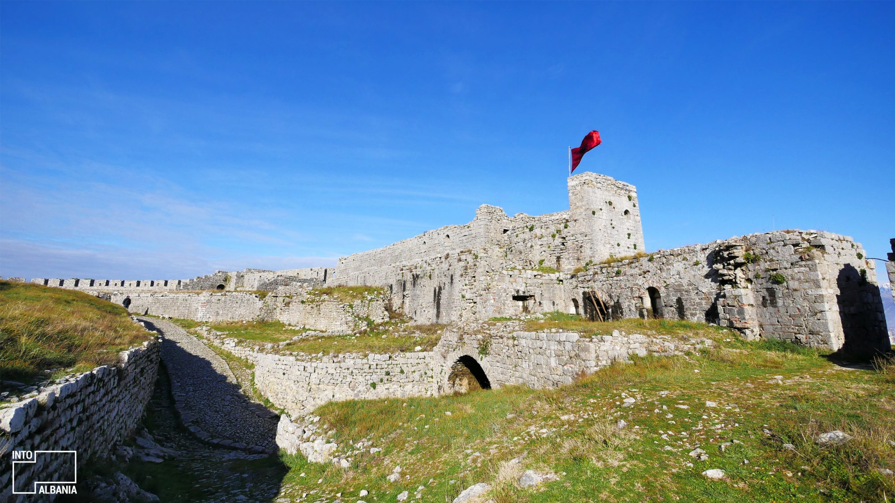
Demografia
Feja: Prania ortodokse ishte një ndikim historik prej sundimit bizantin dhe më pas prej feudalëve serbë të Zetës, të cilët i përkisnin pas Skizmës. Me vdekjen e Stefan Nemanjiqit, ndikimi venedikas bëhet më i dukshëm dhe Argjipeshkvia e Tivarit u kthye në mbështetje për hapjen e katolicizmit. Pas pushtimit osman elementi i krishterë lejohej të banonte në vendbanime larg kështjellës, kësodore qyteti nuk do të ishte më seli ipeshkvnore dhe arqipeshkvnore metropolitane deri më 15 mars 1867 kur u emërua argjipeshkv Karl Pooten. Deri në kohën e emërimit të tij, selia e arqipeshkvisë ishte në Tivar. Në vitin 1478 kur Mehmeti II rrethoi qytetin, në kështjellë qenë dy fretën françeskanë, njëri prej tyre arbër, P. Pali nga Matja. Me pushtimin në qytet u përhap Islami, së pari prej pranisë ushtarake dhe më pas nga popullata e konvertuar. Qyteti ka përshfaqur që me pragun e periudhës së Bushatllinjve një hapje kundrejt larmisë fetare. Por në rastin e prishjes së Oxhakut të Jeniçerëve, çoi në dëbimin e bektashinjve nga qyteti, gjë që sipas Dela Rokës ka shtyrë drejt Islamit synit. Sidoqoftë ky tarikat ishte ndër të parat mënyra të avitjes së Islamit në qytet, duke qenë se jeniçerët ishin trupë e bekuar nga Haxhi Bektashi. Sipas studjuesit të historisë së qytetit, Hamdi Bushatit, mendohet se në fillim të sundimit të Mustafa pashë Shkodrës ka pasur afro 70 teqe të tarikateve të ndryshme, që ndiqeshin edhe prej parisë feudale. Tarikatet që kanë qenë dhe janë ende të përhapura në qytet janë bektashitë, nakshibenditë, rifaitë dhe tixhanitë. Rinisja e hapjes së tyre pas dëbimit të madh, qe vepër e Sheh Ahmet Shkodrës. Më 1846 u vendos në qytet Urdhri Jezuit, për të themeluar një qendër të vazhdueshme, duke kontribuar në ngritjen kulturore të qytetit me institucionet arsimore, kongregacionet bamirëse. Urdhri Françeskan kishte një prani të kryehershme në viset përreth Shkodrës, duke pasuar benediktinët në shek. XIII, por në qytetin e Shkodrës u ngulitën për herë të parë më 1861 me nisjen e ndërtimit të Kuvendit të Gjuhadolit. Ortodoksët e qytetit, sipas thënies lokale s'bajnë ma se 100 shpi, nuk kanë lidhje me ortodoksët mesjetarë dhe relativisht janë të përbërë prej origjinave kuço-vllehë ose gogë, shqiptarë, serbo-malazezë, grekë e armenë. Sipas burimeve, paraardhësit e ortodoksëve shqiptarë kanë ardhur nga Vilajeti i Kosovës dhe i Manastirit, veçanërisht nga Struga (familja Banushi, Pistoli). Ortodoksët me prejardhje joshqiptare janë shqiptarizuar me shekujt. Shkodra përmendej si qendra e fetarizmit islam, ashtu dhe atij katolik, në Shqipëri. 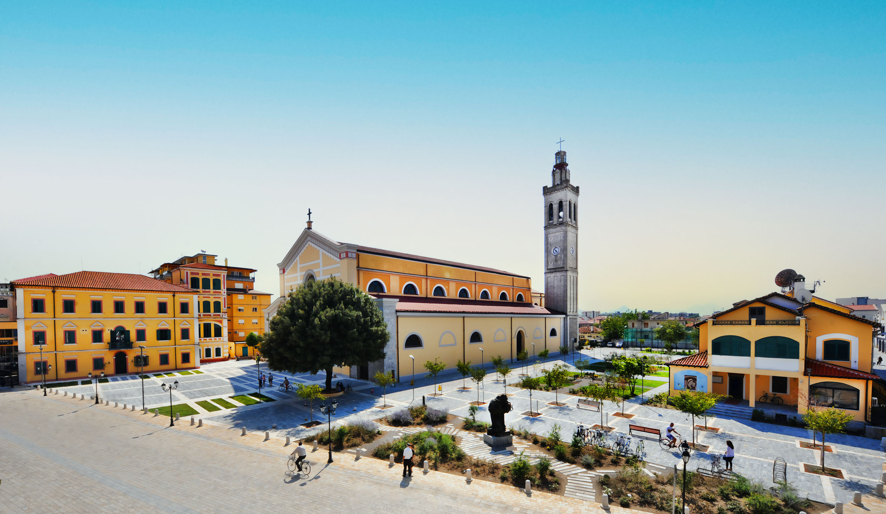
Gjuha:
Dialekti i gegërishtes është ai dialekt i cili përdoret në qytetin e Shkodrës. Është një lloj komunikimi i cili duhet të përdoret ton më i lartë zëri dhe theksi duhet të përshtatet që në fëmijëri. Ky theks është përdorur nga shkrimtarët e njohur shqiptare verior siç janë Gjergj Fishta, Ndre mjeda, Migjeni etj. Ky lloj theksi është përdorur edhe nga libri i parë shqiptar "MESHARI" i Gjon Buzukut në vitin 1555. Gjithashtu ky lloj dialekti flitet edhe nga kosovarët por me pak ndryshime. Shkodranët shquhen për këngët e tyre me theks geg gjithashtu dhe per të folurën e tyre të ëmbël me këtë theks.
Bukuritë Natyrore
Shtrihet për rreth 872.71 km2 në nyjën hidrografike me pranë liqenit me të njëjtin emër dhe lumenjtë Drin, Bunë dhe Kir në një ultësirë të "mbrojtur" nga liqeni, Alpet Shqiptare në lindje ku spikasin majat e Cukalit (1.722 m), Maranaj (1.576 m), Sheldisë (mali Sardonik i Barletit; për nga Shurdhahu) dhe Taraboshit (rreth 700 m) në perëndim dhe deti Adriatik. Në një rreze prej 45 km mund të arrihen ranishtet në Adriatik, shëtitjet e alpinizmi në Alpe, e kanotazhi nepër lumenj.
Krahas rëndësisë historike, Shkodra krenohet me bukuri natyrore mahnitëse. Liqeni i Shkodrës, liqeni më i madh
në Evropën Jugore, është një destinacion popullor për adhuruesit e natyrës. Vizitorët mund të shijojnë shëtitjet me varkë, peshkimin dhe
vëzhgimi i shpendëve në ligatinat përreth, të cilat janë shtëpia e një game të larmishme speciesh bimore dhe shtazore.
Syri I Sheganit:
Shqipëria është e pasur më natyrë të virgjër dhe peizazhe përrallore. Një ndër to i cili kohët e fundit po tërheq edhe vëmendjen e shumë pushuesve është edhe Syri i Sheganit. Si një ndër nga destinacionet e zbuluara së fundmi kjo zonë konsiderohet ndër më të bukurat dhe më me vlerë në bregun e liqenit të Shkodrës.
I pozicionuar rreth 40 minuta larg qytetit verior, ky monument natyre i kategorisë së tretë, është kthyer në destinacionin ideal për të kaluar një ditë ndyshe plot me adrenalinë. Syri i Sheganit si një perl natyrore të fshehur buzë Liqenit të Shkodrës, është ideali për të realizuar piknik apo ecje në natyrë.
Ky destinacion gjendet në afërsi të fshatit Gashaj, i cili është pjesë e njësisë administrative Bajzë dhe për të arritur pranë këtij thesari të çmuar përveç rrugës automobilistike, kjo pikë mund të vizitohet edhe nëpërmjet rrugëve ujore me varka. Bukuritë natyrore të kësaj zone janë interesante të eskplorohen edhe me kajak, apo edhe stand up paddle, për të përjetuar një eksperincë unike dhe të veçantë në këtë zonë.
Lumi i Bunës:
Lumi Buna (latinisht Barbana, malazisht Bojana) buron nga Liqeni i Shkodrës dhe derdhet në Detin Adriatik. Buna është i vetmi emisar (kanal nëpër të cilin derdhet në det uji i një liqeni) i Liqenit të Shkodrës. Pas fshatit Samrisht, Buna kthehet në kufi shtetëror midis Shqipërisë dhe Malit të Zi.
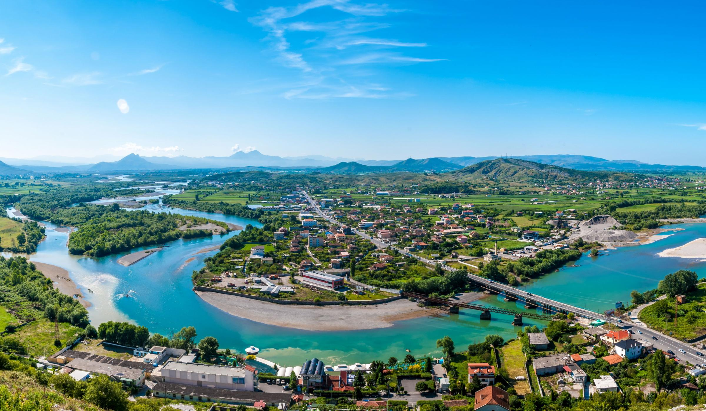
Liqeni i Shkodrës:
Liqeni i Shkodrës është liqeni më i madh në Gadishullin Ballkanik dhe llogaritet si një nga liqenet më të vjetra në botë.
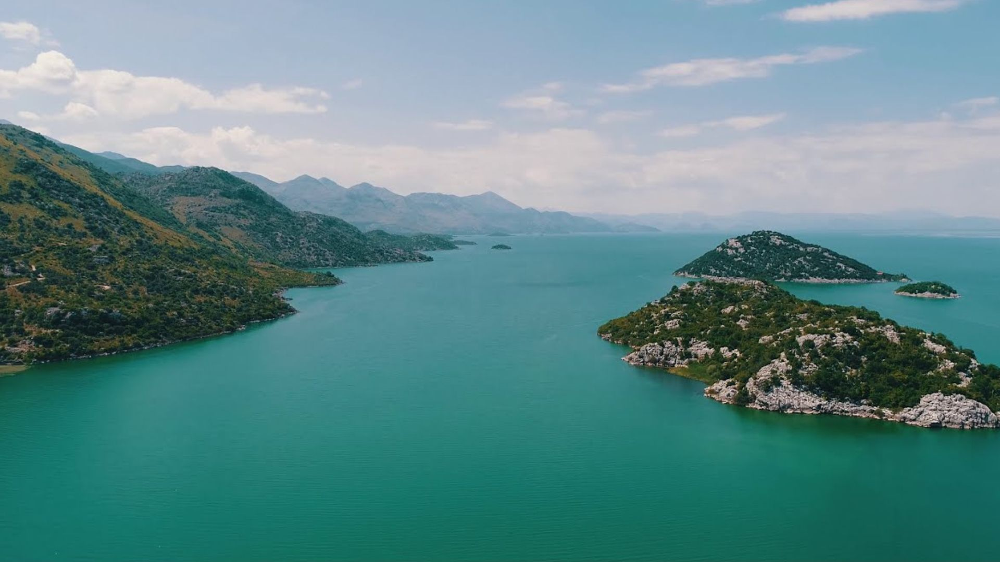
Kultura dhe Trashigimia
Kultura dhe trashigimia
Trashigimia Kulturore ne qytetin e Shkodrës mbeshtetet mbi dy kolona të rëndësishme:
Trashigimia Kulturore Shpirtërore dhe Trashigimia Kulturore Materiale.
Kënga qytetare Shkodrane është pjesë e trashigimisë shpirtërore.
Kënga qytetare Shkodrane është një thesar me vlera artistike kombëtare. Repertori i saj është shumë i pasur dhe i larmishëm, e lindur në një ambient e në rrethana të caktuara historike. Ashtu si filigramat, meloditë e bukura Shkodrane janë punuar me mjeshtri, janë lëmuar në rrjedhen e kohërave nga populli, duke na ardhur edhe sot të freskëta dhe origjinale siç është vetë jeta dhe natyra e bukur e banorëve të Shkodrës ndër vite.
Kemi këngë shumë të vjetra, qindra vjeçare siç janë; vallet e kënduara (Shtregullat) që interpretohen me dhe pa shoqërim instrumenti në këto raste:
Në të gjithë ritualin e dasmës (tek vajza dhe djali),
Në festat e pranverës ?Shtregullat? në oborret dhe bahçet e shtëpive shkodrane,
Në shetitjet e ndryshme në natyre, gëzimë familjare etj.
Këto këngët janë shumë të brishta dhe elegante, të thjeshta në ndërtim (ritmikë dhe melos) por shumë origjinale. Pikërisht për këtë duhet patur kujdes që kjo trashëgimi të mos denatyrohet nga askush. Bukuria e këtyre këngëve është të kënduarit në grup, me rradhë zërat femërorë dhe mashkullore, herë në unison por dhe të ndarë sipas rregjistrave (kuartë - kuintë).
Në ambjentet e oborreve janë shoqëruar me hap të lirë dy grupe përballë njëri tjetrit 8 deri 10 persona Burra dhe gra. Pak nga këto këngë janë kërcyer me ritëm valleje.
Gjuha e përdorur në këto këngë është shumë e pasur, e larmishme që ka prekur çdo aspekt të jetës ,shpesh herë dhe me një humor fin. Në qendër të përmbajtjes së këtyre këngëve kanë qënë më të shumten bukuria dhe vitytet e vajzës dhe të djalit që më pas do të lidhnin jetën dhe kështu do të ruhej vazhdimësia.
Baza modale e këtyre këngëve është diatonika e pastër, kryesisht modi eolian (minori natyror) ç?ka dëshmon për lashtësinë e këtyre motiveve.
Këngët e ahengut shkodran
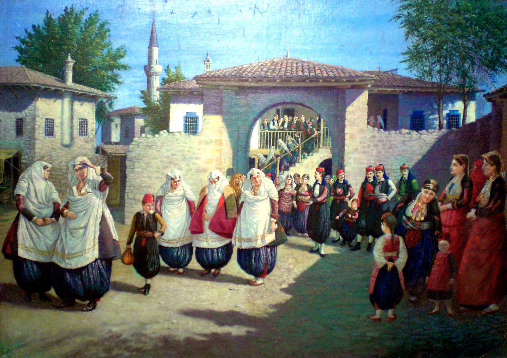

Kuzhina
Shkodra njihet për kuzhinën e saj të shijshme tradicionale shqiptare. Pjatat lokale përfshijnë fërgat, një pjatë e shijshme e bërë me speca, domate dhe djathë; dhe tav kosi, një pjatë e pjekur me mish qengji dhe salcë kosi. Vizitorët mund të eksplorojnë skena e gjallë e ushqimit të qytetit dhe shijoni shije autentike në restorante dhe kafene të ndryshme.Tave Krapi: është e famshme Tava e Krapit të Shkodrës. Shija e kësaj pjate të vjetër i fton të gjithë drejt Shkodrës, shqiptarë e të huaj. Nuk ka mbetur njeri pa u përfshirë nga lumturia që të zgjon shqisa e shijes pasi ka provuar këtë tavë të mrekullueshme, me të cilën mburret krenare Shkodra. Kjo recetë tipike e këtij qyteti i ka fillesat e saj që me krijimin e pazarit të Shkodrës. Asaj kohe, akshijtë (kuzhinierët) zhvilluan përpunimin e peshkut, e veëanërisht Krapit, i cili ishte specialitet i liqenit të këtij qyteti. Edhe në qytete të tjera, përveë Shkodrës është eksperimentuar të gatuhet një tavë e tillë. Por mjeshtrit e vërtetë të gatimit të saj nga Shkodra thonë se ajo ëdo gjë mund të jetë, vetëm jo një tavë shkodrane e krapit. AgroWeb.org sjell më poshtë recetën origjinale të një prej kuzhinierëve më të mirënjohur e të vjetër shkodran, Xhelal Bakut. Recetë nga e cila mund të provojmë shijen e vërtetë të kësaj tave të mrekullueshme. 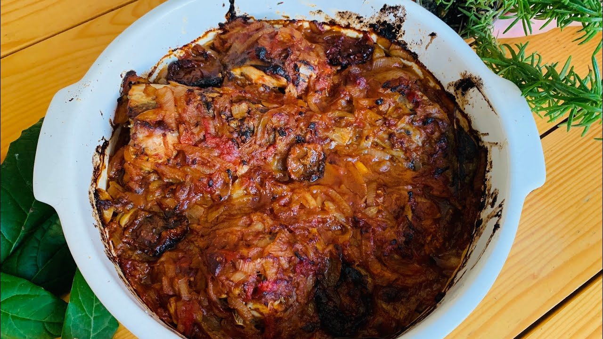
Byrek Lakuriq: Byreku i zbuluar sipas traditës shkodrane, i njohur në disa zona edhe me emrin Lakuriq është një ndër shijet më të veëanta të kuzhinës tradicionale shqiptare tipike e zonave veriore, e konkretisht Shkodrës. Amvisat shkodrane e gatuajnë në disa mënyra këtë recetë fantastike duke përdorur mbushje e shije të ndryshme, të ëmbla apo të kripura. AgroWeb.org ju sugjeron më poshtë dy receta fantastike të përgatitjes së byrekut të zbuluar me kunguj të njomë, një të ëmbël dhe një të kripur, që të dyja të shijshme në mënyra të ndryshme por që do tëju tërheqin patjetër me shijen e tyre të veëantë.
Peshk në Tjegull: është një recetë fantastike, ideale për tu përgatitur gjatë fundjavës. Përgatitet krejt lehtë dhe shpejtë në shtëpi, e padyshim shija e saj mbush gjithë shtëpinë me dëshirën për ta shijuar. Peshku në tjegull është traditë e Shkodrës, ky specialitet është një ndër pjatat kryesore me të cilën mburret ëdo familje shkodrane ndërsa është gjithashtu si specialiteti më i mirë i restoranteve të zonës. Tava në tjegull është një mënyrë fantastike për ti dhënë peshkut një shije edhe më superiore, por në mungesë të saj kjo recetë mund të gatuhet në tavat e zakonshme që keni në shtëpi. Peshku në tjegull mund të gatuhet në mënyra të ndryshme dhe me kombinime të ndryshme perimesh. 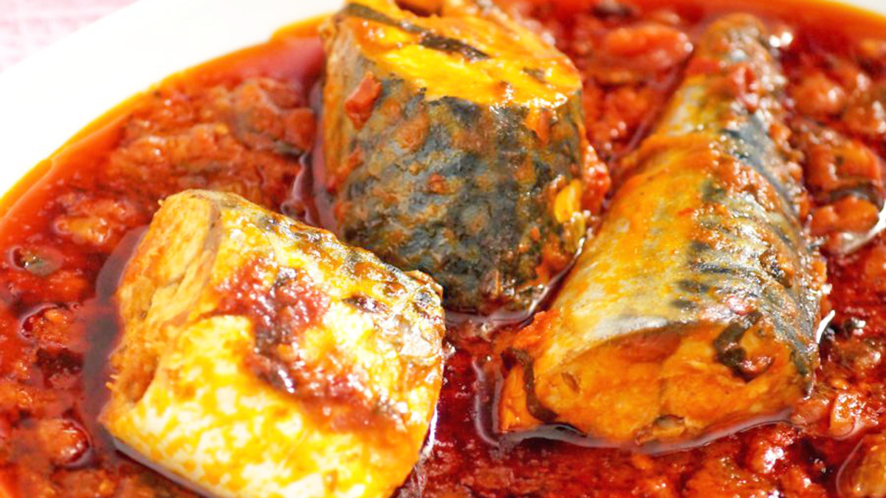